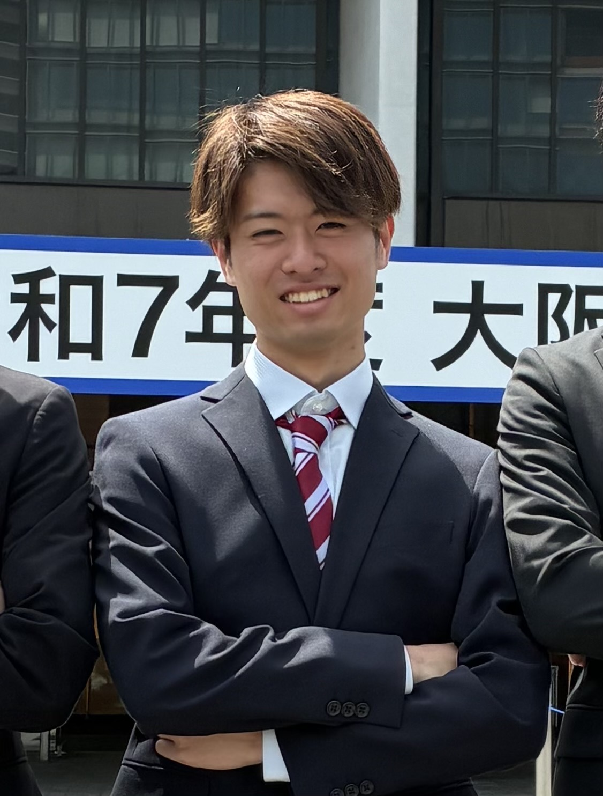
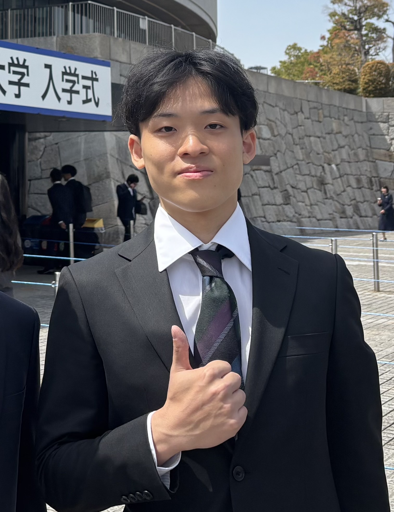

About
VALIARKは、AIを活用して課題解決を設計する組織です。設計から実装、運用まで技術責任を引き受け、静かで誠実な設計思想で社会実装を支えます。
2025年10月、大阪大学発のAI開発組織として設立。企業・教育機関・地域プロジェクトとの業務委託・共同開発を通じて、設計から実装・運用まで技術責任を引き受けるパートナーとして活動を開始しました。
PedalShare、SportsTech、Athene、TERRAVERAなど複数プロジェクトで基盤設計・CTO機能を担い、実利用前提のAI開発を進めています。爆発的な成長よりも、長期的な信頼の積み上げを重視しています。

共同代表
機械学習・データサイエンスを専攻。AI基盤設計と実装を担当。

共同代表
ビジネス戦略・プロジェクトマネジメントを担当。技術と経営の統合を担う。
若くして成功を追う時期があった。しかし価値観が変わった。
AIは時間を守るための基盤である。見逃される人を減らしたい。
静かで誠実な設計。それが私たちの選択である。
構想段階から相談可能です。